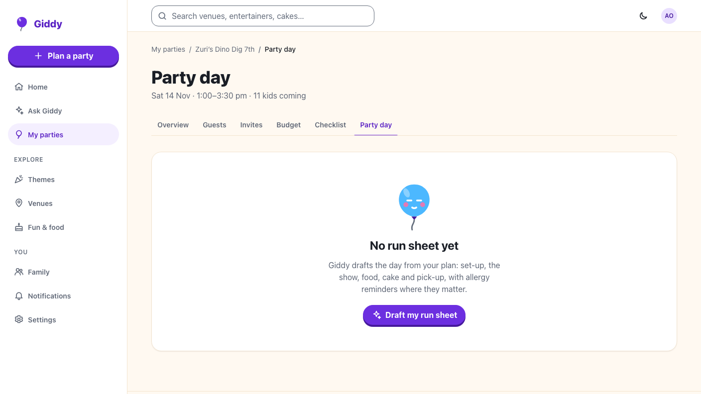
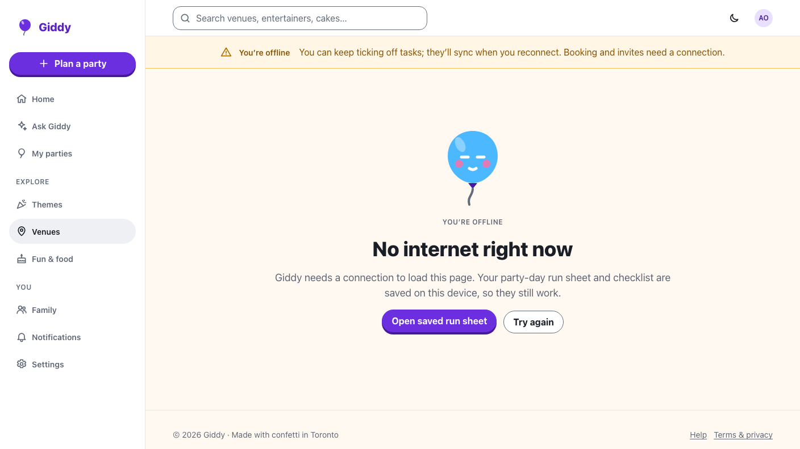

Giddy · Video 12
Run the party day
What's next, who to call, and it still works with no signal
What's next, who to call, and it still works with no signal
Now ringed, earlier steps Done; it moves on at 2:15; quick calls and the allergy check.

Back online lists what synced; a co-planner's change is shown to resolve, never overwritten.

Drafted steps, quick calls, allergies, draft rules, viewers, If-Match versions and the 412 conflict.
Now and Done with the clock, tel: links, drafting, loading from the device, sync, conflicts, the offline page, axe.
Plus a production build: the service worker reloads a saved run sheet with no connection.
Next: sign up and set up the family